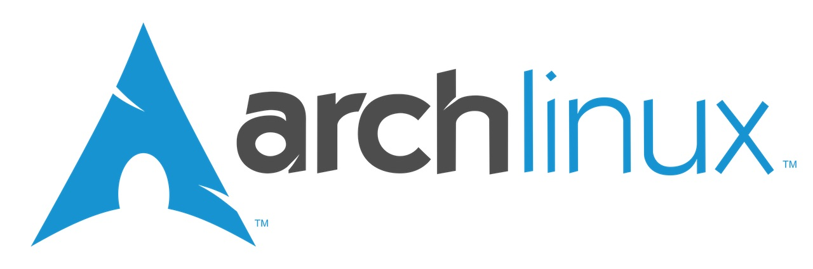
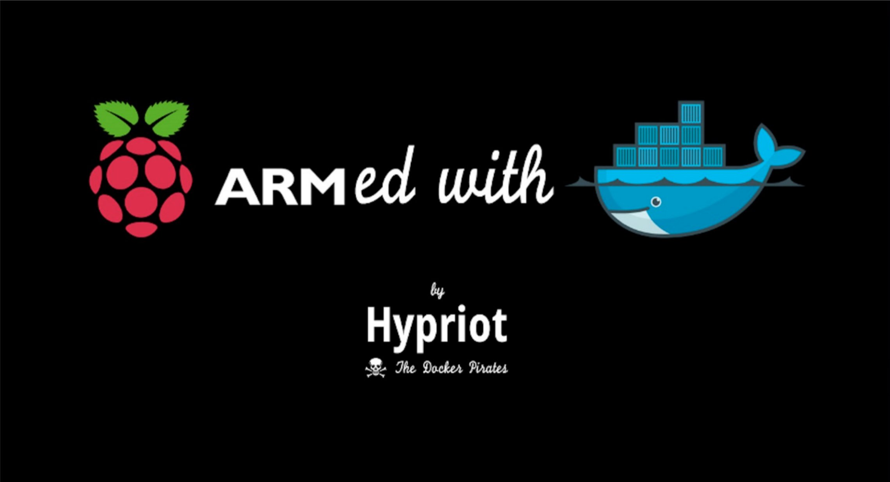

作業系統
2017.03.06
頁籤
簡介
Linux 是開源的作業系統， 派系眾多， 如果每種都想試玩，可以考慮 樹梅派官方 的多系統 NOOBS，可於開機時選擇切換作業系統。 （下載 、 安裝參考）
若是和筆者相同， 認為伺服器就該保持單純， 但偏偏系統那麼多又沒一個認識， 可以先從網友對 24 套作業系統的整理簡介 ， 先挑一個看順眼的著手吧！
Arch Linux

給喜歡純手工派或是追求極簡風 Linux 的使用者。 新手也不必過於擔心， 其背後可是有中文版的 Arch Linux 維基 與廣大網友大大們的支持。
Hypriot

預設已將 Docker 整合進去，所以不用像 Arch Linux 得自己從頭安裝，也不用像 Raspbian 還要修改核心。
關於安裝的參考教學：